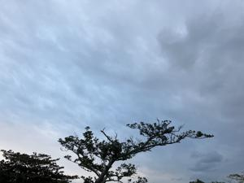
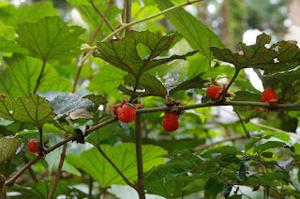
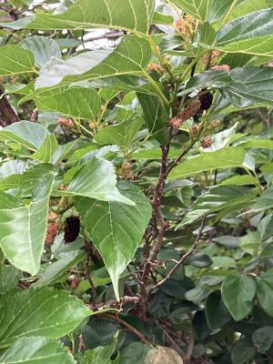

うるがいの話 ある日
最新: ホウロクイチゴ【うるがいの話 ある日】とは 一日だけのプログです
『うるがいの話』の最新一日だけのプログで、通信料が少なく経済的だ。カニの画像をクリックすると全ての日付が載る『うるがいの話』サイトを表示します
|
|
【うるがいの話】 うるがい(ｳﾙｶﾞｲ urugai)とは、『もずくがに』の名前でとても大きくなります。 |
|---|---|
|
|
【カミマヤーの話】 猫のことを方言でマヤーといいます。カミマヤー（kamimayaa）とは、神の猫のことです。 |
|
【たながぁの音楽】 たながぁ（ﾀﾅｶﾞｰ tanagaa）とは手長えびのことで、何種類かあり大きいのは車 エビぐらいになります。 |

|
【ぶながぁの話】 ぶながぁ(ﾌﾞﾅｶﾞｰ bunagaa)とは、赤い髪の毛、赤い身体、そして身長は１ｍ２０ｃｍ ぐらい、川の蟹を食べているの目撃された。場所は沖縄県国頭郡大宜味村のと ある村僕の隣近所に住んでいる爺さんから、聞いた話です。 |
|
|
【ギーマの話】 ギーマ(giima)とは、山原の里山に咲くスズランに似た、 花を付けます。実は食べられます、 気が付くと口の周りが紫になっています。 |
2024年12月07日 (土）ホウロクイチゴ
15:33

『見かけなくなった木の実』の新聞の投稿で、『ホウロクイチゴ』とあ
った。ン？、なんだろうとネットで調べた。私達は、山のイチゴと言っ
ていた。

そうそう、私も山で食べた。この前、ウォーキングコースに桑の実が、
なっていたので食べる。これは、単にイチゴと言っていた。

今朝、新聞の告別式広告をみると、実家の隣に住んで居た近所の家族の
名前が載っていた。幼友達の妹が喪主になっていた。旦那さんは６１歳
、昼過ぎに甥っ子に香典を持っていてもらおうと気づき、電話する。
甥っ子も知り合いに香典を持って行ってもらったので、式場へはいかな
いといった。ところで、若いよね、病気かい？と尋ねると山へイノシシ
を獲りに友達と行ったが、倒れて亡くなったと、で死亡原因は司法解剖
を二日ほどかかったものの、よく分からないとのこと。
幼友達にラインでお悔やみのメールをする、突然のことで大変だろう。